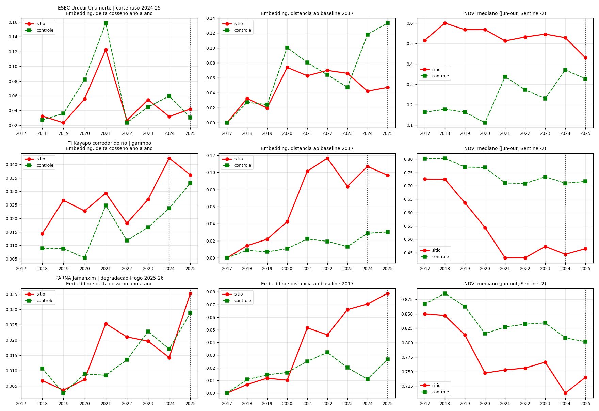
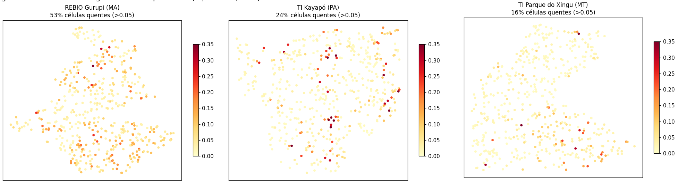

Ranking
| # | Unidade | UF | Pressão |
|---|
Inteligência sobre trajetórias territoriais com embeddings de satélite (Google AlphaEarth Satellite Embeddings) e dados abertos. Primeira aplicação: unidades de conservação e terras indígenas sob pressão. Hack Brasil 2026.
| # | Unidade | UF | Pressão |
|---|
No Jamanxim, o sinal dos embeddings aparece anos antes do alerta oficial: diverge do controle desde 2021, e o alerta DETER do ponto só veio em out/2025.

Detalhes e método em teste/PLANETSIGNAL_TESTE.md.
Parque Nacional do Jamanxim, 600 células: 40 (7%) com drift acima de 0,05 entre 2017 e 2025. 15 delas já aparecem até 2024, antes do alerta DETER de out/2025.

Drift medido nos embeddings do Google AlphaEarth. Script e notas em teste/.
Áreas amostradas, ordenadas pelo percentual de células com drift de embedding acima de 0,05 entre 2017 e 2025: Gurupi (MA) 53%, Kayapó (PA) 24%, Xingu (MT) 16% e Jamanxim (PA) 7%. Alto Turiaçu, Aripuanã e Uruçuí-Una estão em refino.

Detalhes em teste/PLANETSIGNAL_TESTE.md.